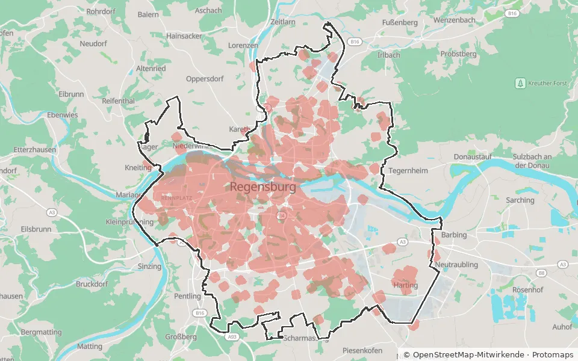
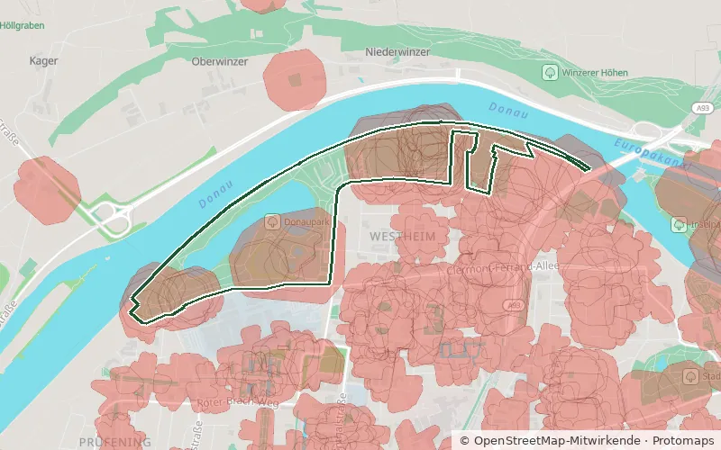
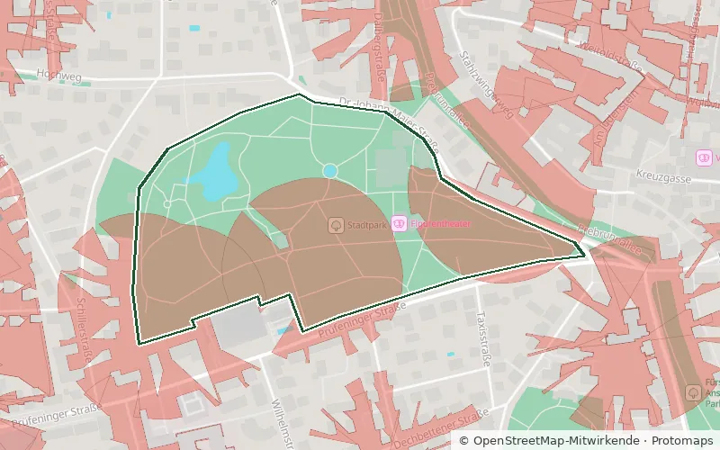
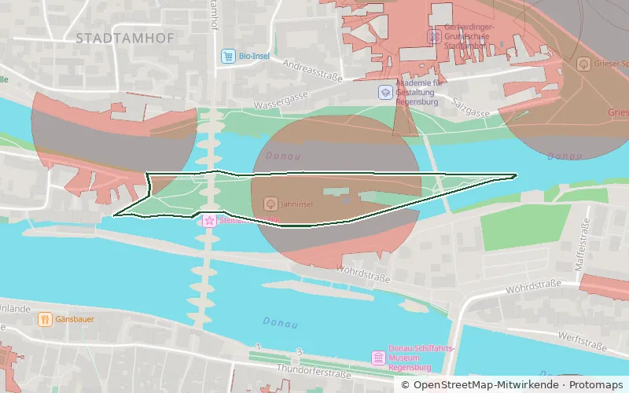
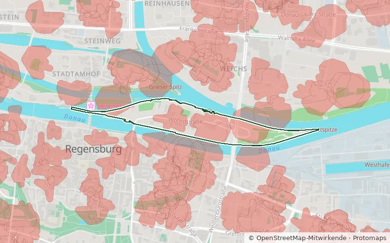
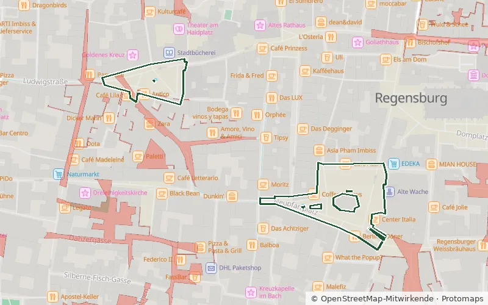
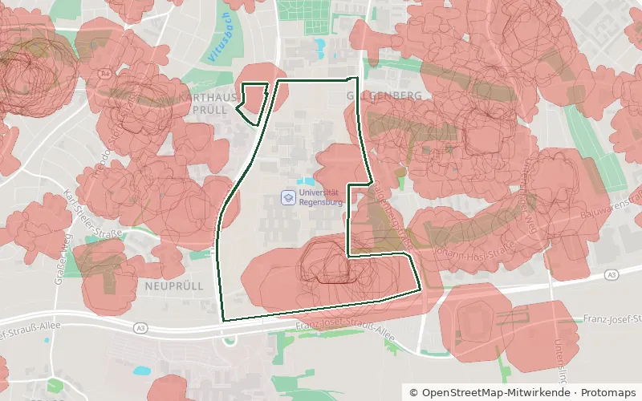

In Regensburg ist öffentliches Kiffen auf 15 km² verboten, das sind 18,4 % der Stadtfläche von 81 km². Grund sind 991 Einrichtungen wie Schulen und Spielplätze: In ihrer Sichtweite, bis 100 Meter vom Eingang und ohne Gebäude dazwischen, verbietet § 5 KCanG den Konsum. Dazu kommen die Fußgängerzonen der Altstadt von 7 bis 20 Uhr und überall die Gegenwart von Minderjährigen.
Regensburg ist klein und dicht bebaut, mit wenig Wald (9 % der Stadtfläche). In Bayern ist gerauchtes Cannabis außerdem in Biergärten, auf Volksfesten wie der Dult und auf dem Gelände von Spielplätzen, Schulen und Kitas verboten (siehe Landesrecht in Bayern).

Woher die Zonen in Regensburg kommen
| Einrichtung | Anzahl | Zonenfläche |
|---|---|---|
| Schulen | 85 | 3,2 km² |
| Kitas und Kindergärten | 83 | 1,9 km² |
| Kindertagespflege | 15 | 0,3 km² |
| Spielplätze | 318 | 5,6 km² |
| Kinder- und Jugendeinrichtungen | 20 | 0,5 km² |
| Sportstätten | 470 | 7,7 km² |
Jede Art für sich gezählt, Überlappungen also mehrfach. Anbauvereinigungen nur, soweit in OpenStreetMap eingetragen.
Die meisten Zonen gehen auf die 470 Sportstätten zurück, danach auf die 318 Spielplätze. Auf allen städtischen Spielanlagen verbietet die Grünanlagensatzung, zu rauchen, Alkohol zu trinken „oder andere berauschende Mittel“ zu konsumieren, und in allen städtischen Grünanlagen, sich „in einem Rausch“ aufzuhalten; Spielanlagen sind von 9 bis 20 Uhr offen (Grünanlagensatzung).
Donau, Inseln und Parks
Im Donaupark liegen 63 % der Fläche in einer Zone, um fast 40 Sportanlagen, drei Spielplätze und eine Kita. Im Stadtpark sind es 58 %, im Villapark 95 %, im Herzogspark 85 %.


Auf der Jahninsel liegen 53 % in einer Zone, am Grieser Spitz 65 %, auf dem Unteren Wöhrd 32 %; dort liegen Sportanlagen, eine Jugendherberge und eine Kita. Auf einem 100 Meter breiten Streifen Land entlang von Donau und Regen sind es 22 %.


Altstadt
Fußgängerzone ist nach dem Konzept der Stadt für die Altstadt der Weg vom westlichen Domplatz über den nördlichen Neupfarrplatz bis zur Königsstraße, dazu Schwarze-Bären-Straße, Haidplatz und Kohlenmarkt (Stadt Regensburg). Große Teile der übrigen Altstadt sind „Wohnverkehrsstraßen“, die die Stadt ausdrücklich von Fußgängerzonen unterscheidet. In der Fußgängerzone gilt von 7 bis 20 Uhr Konsumverbot; blau sind die Fußgängerbereiche aus OpenStreetMap, und das ist mehr als die Fußgängerzone der Stadt.
Von Haidplatz, Kohlenmarkt, Schwarze-Bären- und Königsstraße liegen außerdem 6 % in einer Sichtweiten-Zone. Domplatz (0 %), Neupfarrplatz (0 %) und Steinerne Brücke (0 %) liegen außerhalb der Zonen.

Universität und Dult
Hochschulen sind nach § 5 KCanG keine Verbotsorte. Auf dem Campus der Universität liegen 39 % in einer Zone, um 28 Sportanlagen und zwei Kitas; die Hausordnung verbietet das Rauchen in den Gebäuden (Hausordnung). Im Jahnstadion sind „Drogen jeglicher Art“ verboten (SSV Jahn).

Die Dult ist ein Volksfest: Gerauchtes Cannabis ist dort nach Landesrecht verboten.
Was sonst noch in Regensburg gilt
Bayern hat feste Bußgelder: Konsum in einer Verbotszone nach § 5 KCanG, auch in der Fußgängerzone, kostet 500 Euro, in Gegenwart von Kindern und Jugendlichen 1.000 Euro (Bußgeldkatalog Bayern). Das Gesundheitsschutzgesetz verbietet, Cannabis zu rauchen, zu erhitzen oder zu verdampfen: in Biergärten, auf Volksfesten und auf dem Gelände von Spielplätzen, Schulen und Kitas, bis zu 1.500 Euro (Gesundheitsschutzgesetz). Eigene Verbotszonen für Cannabis hat Regensburg nicht (Stand 27. November 2026).
Häufige Fragen zu Regensburg
Wo darf man in Regensburg kiffen?
Nach § 5 KCanG außerhalb der roten Flächen, etwa auf den Winzerer Höhen (0 % in einer Zone). Nicht berauscht in städtischen Grünanlagen, tagsüber nicht in der Fußgängerzone, nie in Gegenwart von Minderjährigen, gerauchtes Cannabis außerdem nicht in Biergärten und auf Volksfesten. Weiß heißt nicht sicher erlaubt: Hecken, Bäume und fehlende Einrichtungen kennt die Karte nicht.
Wie genau ist das?
Täglich aus OpenStreetMap gerechnet, mit Gebäuden als Sichthindernis; die Zahlen hier sind vom 27. November 2026. Eine Orientierungshilfe, keine Rechtsauskunft (wie gerechnet wird).
Fehlt eine Einrichtung? Korrekturen in OpenStreetMap stehen am Tag darauf auf der Karte; bitte nur eintragen, was es vor Ort gibt.